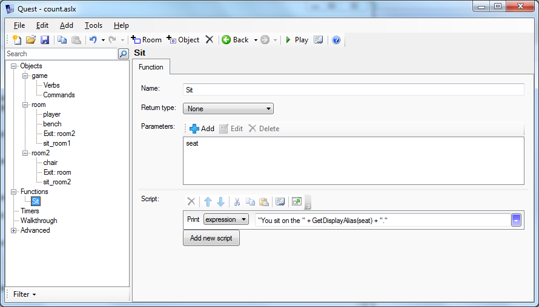

Using and Coding Functions
Quest has a whole load of functions built in, many of them will be used in your game without you even knowing about it. You can see a full list here: http://docs.textadventures.co.uk/quest/functions/
Quest also “script commands”, which in many ways are like functions. One difference is that script commands are all named in lower case, while functions are all in CamelCase. http://docs.textadventures.co.uk/quest/scripts/
Using Functions and Script Commands
Some functions return a value, some require one or more values. The values it requires are called parameters. For example, the GetBoolean function requires an object and the name of an attribute, and it returns true if that attribute is present and set to true, and false if the attribute is set to false or missing.
In this example, my_object and “flag” are the two parameters, and they go inside brackets. The brackets tell Quest these are the parameters.
return_value = GetBoolean(my_object, "flag")
Some functions take parameters, but do not return a value:
LockExit(vault_exit)
Sometimes a function has no return value and no parameters:
ClearScreen()
You might wonder why you need the brackets, if there are no parameters. Actually, you do not.
ClearScreen
Well, not always. If the function is on a line on its own with nothing else, Quest will handle it fine. Otherwise, you may need the brackets to ensure Quest will realise this is a function and not something else.
The Type Signature and Error Messages
The type of the value a function returns and the parameters it needs is called its “type signature”, and Quest will complain if you get is wrong. Here are some examples when the number of parameters are wrong, so you know what to expect. GetBoolean is a fundamental function, so gives different errors to most of the rest; it expects specific types or values for its parameters:
return_value = GetBoolean(my_object, "flag", 4)
Error running script: Error compiling expression 'GetBoolean(my_object, "flag", 4)': FunctionCallElement: Could find not function 'GetBoolean(Element, String, Int32)'
return_value = GetBoolean(my_object)
Error running script: Error compiling expression 'GetBoolean(my_object)': FunctionCallElement: Could find not function 'GetBoolean(Element)'
Most functions will give errors like this, which just checks the number of parameters:
ClearScreen(4)
Error running script: Too many parameters passed to ClearScreen function - 1 passed, but only 0 expected
If a fundamental function returns a value (like GetBoolean) and you do not do anything with that value, it will complain:
GetBoolean(my_object, "flag")
Error: Error adding script attribute 'start' to element 'game': Function not found: 'GetBoolean'
Most functions, however, will not cause an error if you do nothing with the return value - even though it is probably a bug in your game! If it does not return a value, and you still try to use it, however, you will get an error:
b = ClearScreen
Error running script: Error compiling expression 'ClearScreen': Unknown object or variable 'ClearScreen'
b = ClearScreen()
Error running script: Error compiling expression 'ClearScreen()': Value cannot be null.Parameter name: key
Custom Functions
The power of Quest is that it lets you do so much. It has dozens of built in functions, but you can easily create your own.
So why would you want to use a function? The basic reason is because you want to do the same thing in two or more different places. As an example, let us say you have a room with a bench and another room with a chair, and you want the player to be able to type SIT, SIT ON BENCH and SIT ON CHAIR. One way would be to have a function that takes the seat as a parameter. You can set up a SIT command in each room that sends it the right seat depending on the room, and you can create SIT ON verbs for the chair and the bench that use the Sit function.
So how do we create a function? Right-click in the left pane, and select “Add function”. Your new function will appear. Set the return type; in this case the function will not return anything, so we can leave it as “None”. Then you can add the parameters.
You can use any names you like here; there is no need for them to correspond to the names in the commands or verbs. In this case there is only one parameter, and I am going to call it “seat”.
Then put in your script. In this example, all it does is print a message. Whatever values are sent as parameters will automatically go into the variables in the same order. In this function we are expecting to be sent some kind of seat, and whatever it is will be held in the “seat” variable. If this function is called by the “siton” verb of the bench, then the “seat” variable will contain the bench object.

Assumptions and Unexpected Values
You need to think about what will happen if the function is sent the wrong sort of variable. Or more specifically, what assumptions are you making about the values the function receives?
In the example above we are expecting an object, we are expecting it to be something that can be sat on and we are expecting it to be there. You might assume it has a certain attribute, such as “alias” (I used the GetDisplayAlias function to avoid that assumption). It is important to think carefully about those assumptions - and I would recommend putting a comment in your code so they are explicitly stated. Just because we called it seat is no guarantee it really is a seat.
If we cannot be sure, then it may be a good idea to test what the thing is before doing anything else; otherwise you can end up with some obscure bugs. In this case, the assumptions are fair. There are four places the function is called, and in each case we can be sure the assumptions are sound. No need to do unnecessary testing.
Return Values
If your function has a return value, you need a “return” script command in it to tell Quest what to return. The parameter you give to the “return” script command has to be of the same type as the you set for your function.
Here is a rather contrived exampled that takes two parameters, and returns an integer.
This slightly less contrived example shows that you can have several returns in your function. Once the return is invoked the script terminates at that point. In this example, we are testing if the player has completed the game. There are three steps, and at each a certain condition is tested. In the first, if the player is not in the final_room, then the function returns false and then it is done. Otherwise it goes to the next step. Finally, if it gets through each test, it returns true.
Overriding Functions
Did I mention that the power of Quest is that it lets you do so much? Not only can you create your own functions, you can replace the existing ones (though not the script commands or some of the more fundamental functions). In the off-line editor anyway.
Let us suppose you want you want room descriptions to have some novel formatting (perhaps the letter ‘A’ in blue, to pick a common example). Click on “Filter” at the bottom left of the screen, and select “Show Library Elements”. In the left pane you will see all the built in functions, commands and so in, all in grey. Find the one you want, in this case ShowRoomDescription (at the top of the pane is a filtering function, which makes the search easier). The function will appear in the right pane. You can click the “Copy” button at top left to get the function copied into your game, and then edit it as you see fit.
Just do not change the name, return type or parameters.
Of course, you can really mess Quest up by overriding functions (but if you do, just delete the function from your game, and the original will still be there), so some care is required…